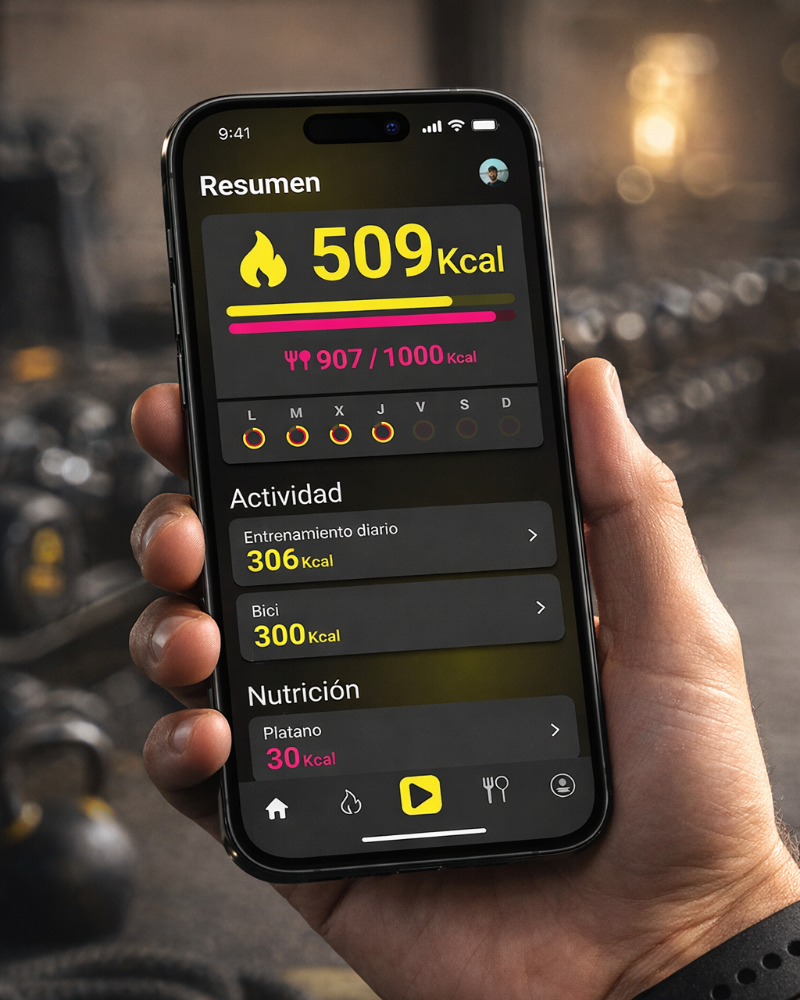
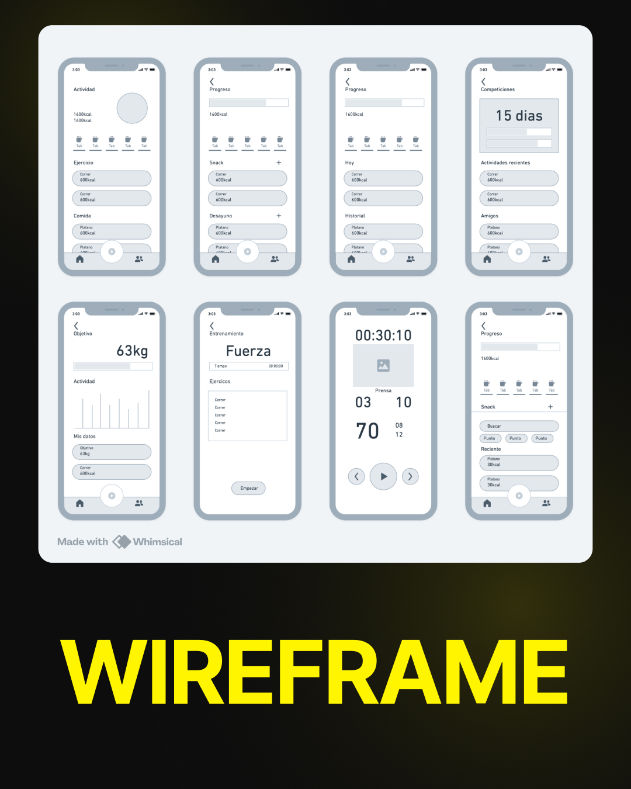
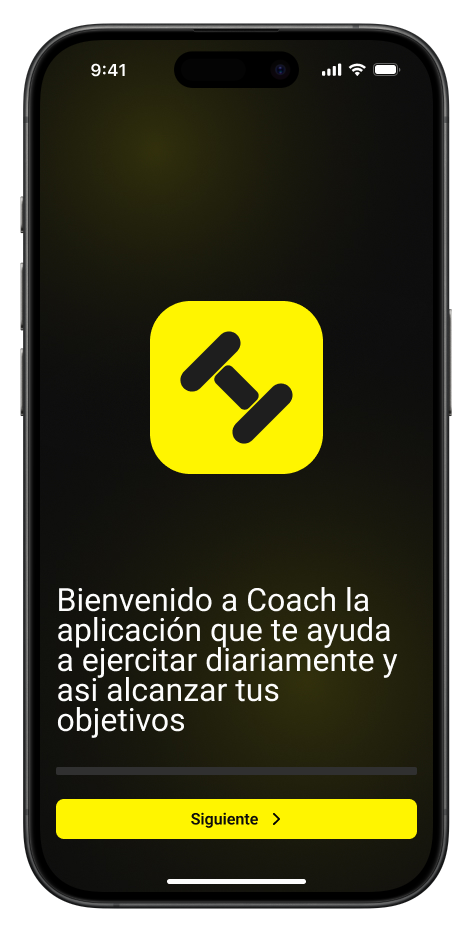
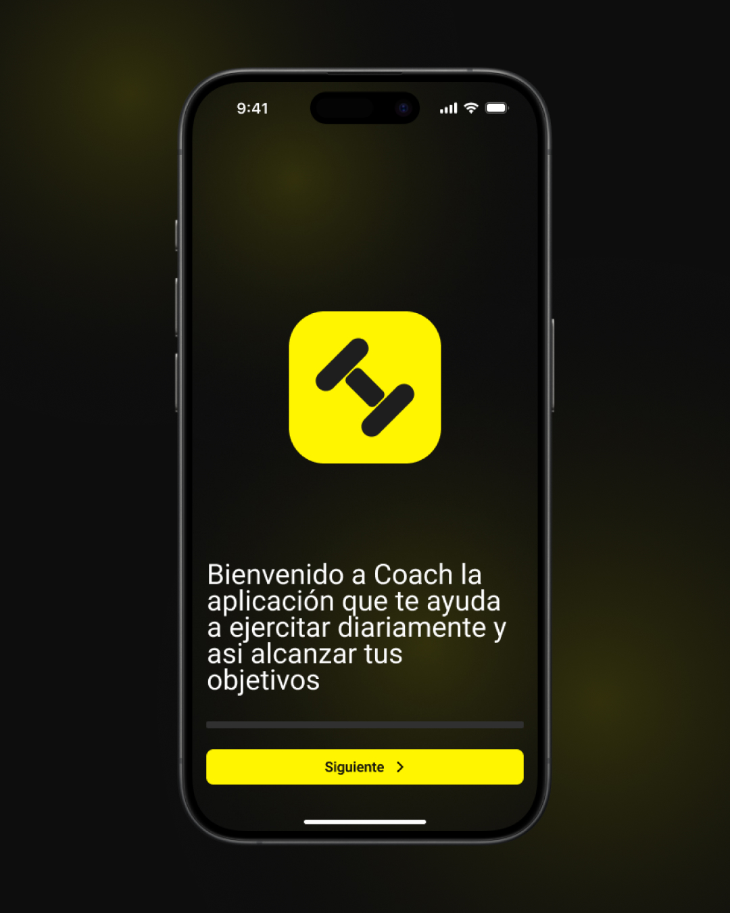
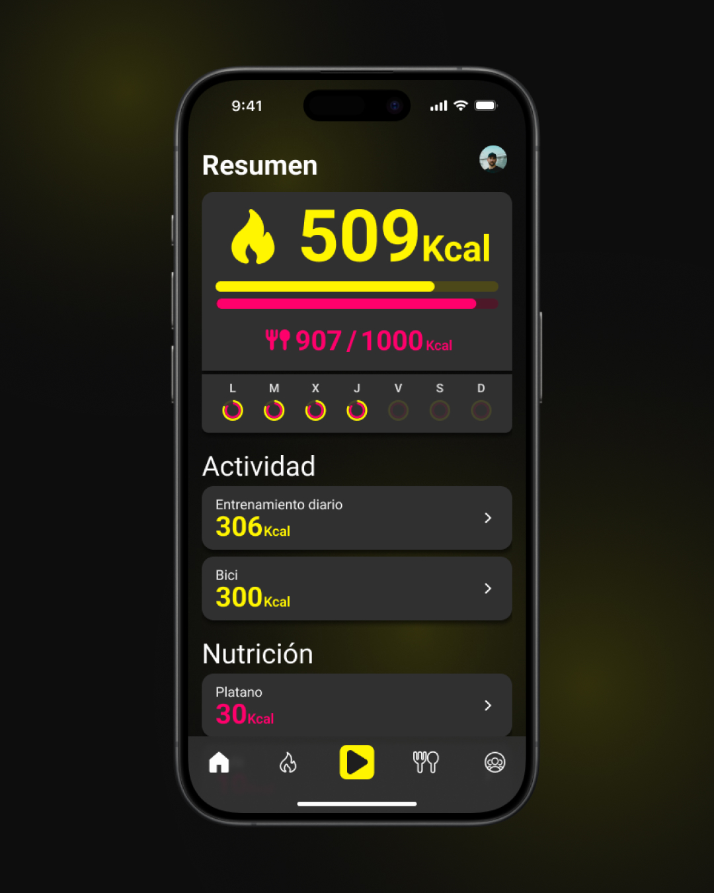
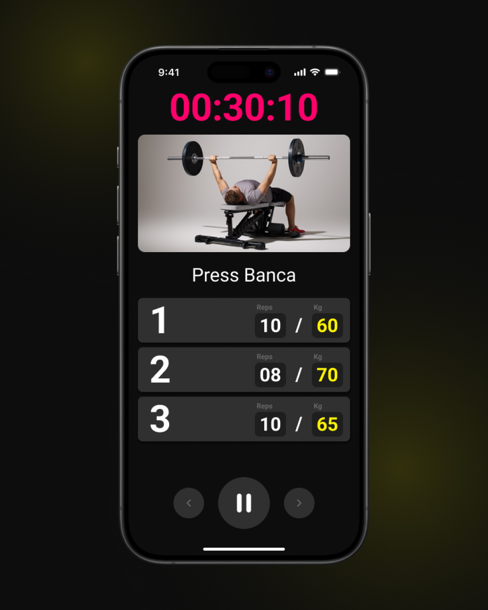
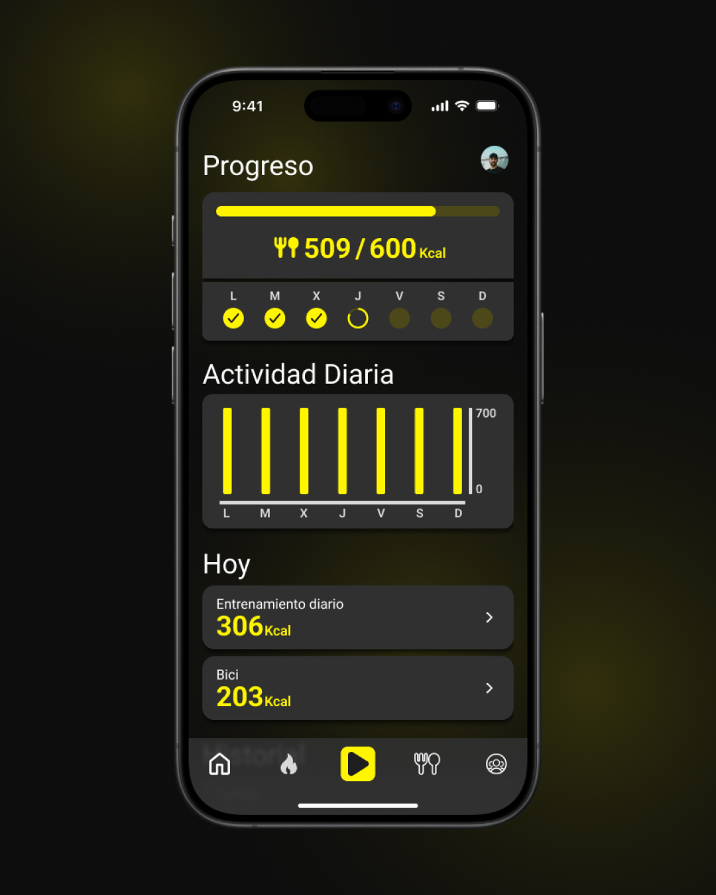
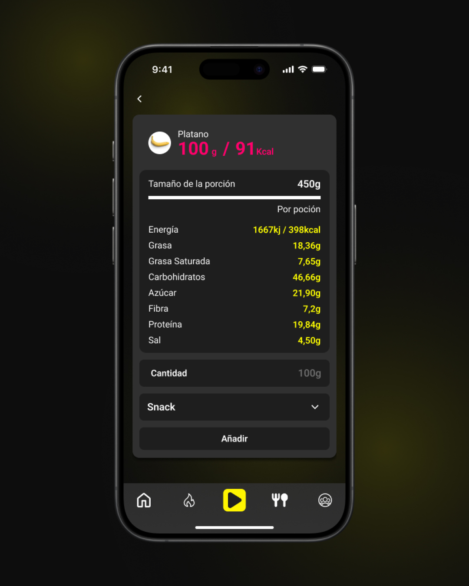
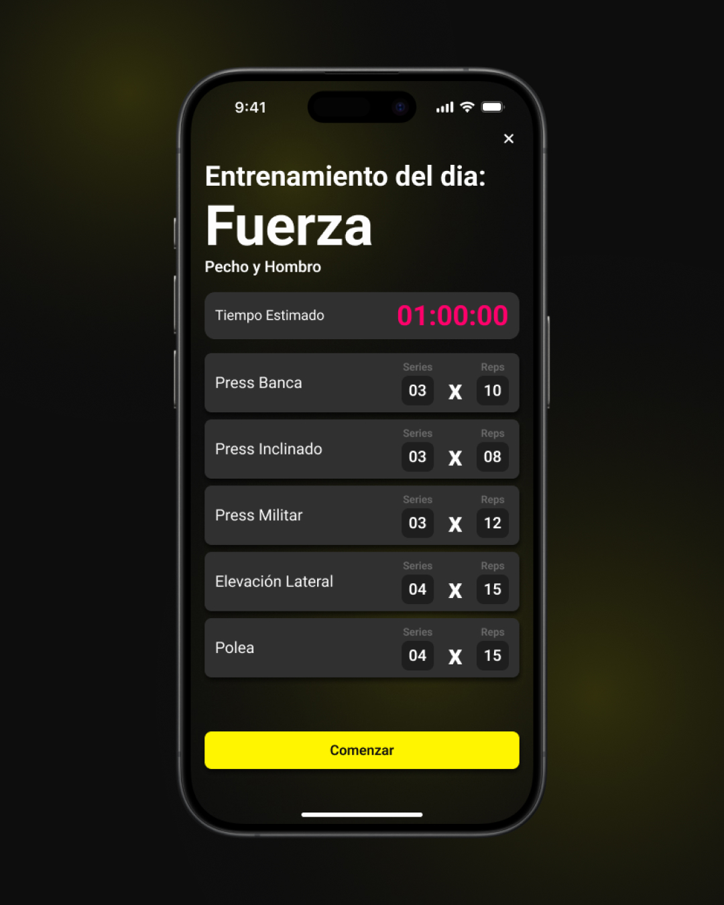

Coach · App

El reto
Una app de fitness que no te hace sentir mal por no abrirla.
El encargo era diseñar una app móvil de principio a fin: investigación, arquitectura, sistema e interfaz. Elegí fitness y nutrición porque es un sector saturado y ruidoso: la mayoría de apps prometen disciplina militar y le hablan al usuario como si tuviera 25 años, dos horas libres y un gimnasio en casa. Nada de eso es real.
La investigación confirmó lo evidente: la gente abandona estas apps porque le recuerdan lo que no está haciendo. Coach se construyó sobre la idea contraria: adaptarse a la rutina del usuario, no imponerle una. Cada pantalla tenía que quitar fricción, no añadirla. Jerarquía clara, un onboarding que pregunta antes de exigir y un panel que pone «qué toca hoy» por delante de «cuánto te falta».
Investigación
Objetivos del producto.
Antes de tocar una sola pantalla, definí qué tenía que conseguir Coach para el negocio y para el usuario, y dónde estaba fallando la competencia.



Decisiones clave
Tres decisiones que ordenan toda la app.
01
Un onboarding que pregunta, no que exige.
El usuario decide cuánto tiempo tiene, qué objetivos persigue y qué tipo de plan quiere. La app se adapta a él, y no al revés.
02
Una pantalla de inicio centrada en hoy.
La primera pantalla enseña lo que toca ahora, no estadísticas apiladas. Ningún gráfico que te recuerde lo que no hiciste.
03
Una acción principal por pantalla.
Cada vista sabe para qué está. Lo que no lleva a la siguiente acción pasa a un segundo nivel. Menos ruido y menos decisiones que tomar.
Producto final
Pantallas.
Onboarding, panel, planes de entrenamiento, nutrición y sesión activa. El mismo lenguaje visual en todas, pero con prioridades distintas según lo que el usuario espera ver al abrirlas.







Proceso
De la investigación a la interfaz final.
01
Investigación
Análisis de la competencia, perfiles de usuario y mapa de fricciones. Por qué la gente empieza y por qué lo deja.
02
Wireframes
Arquitectura, flujos y prioridades en baja fidelidad. Decisiones antes que píxeles.
03
Sistema de diseño
Tipografía, color, componentes y estados. Coherencia obligatoria entre pantallas.
04
Interfaz final
Pantallas en alta fidelidad, prototipo navegable y entrega a desarrollo lista.